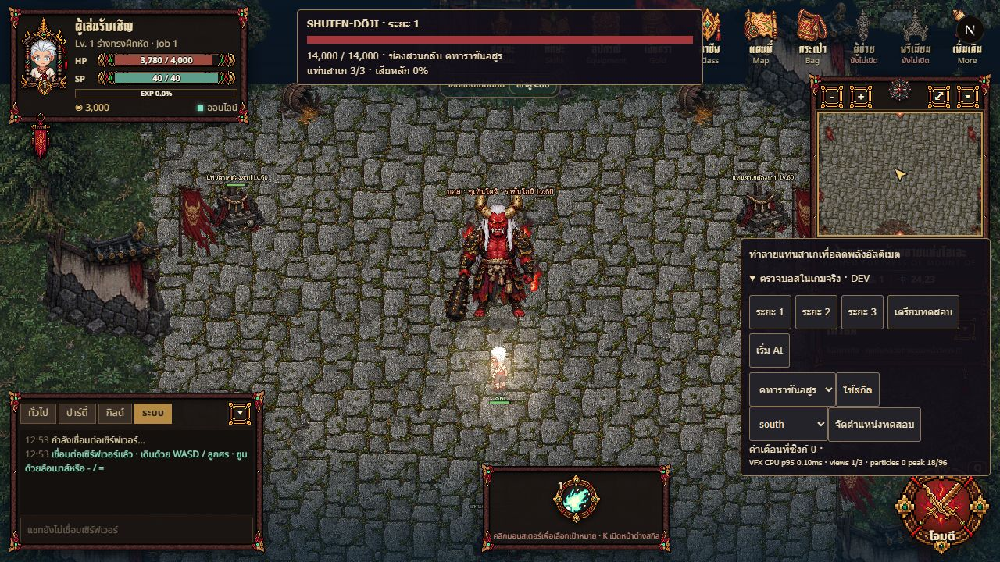
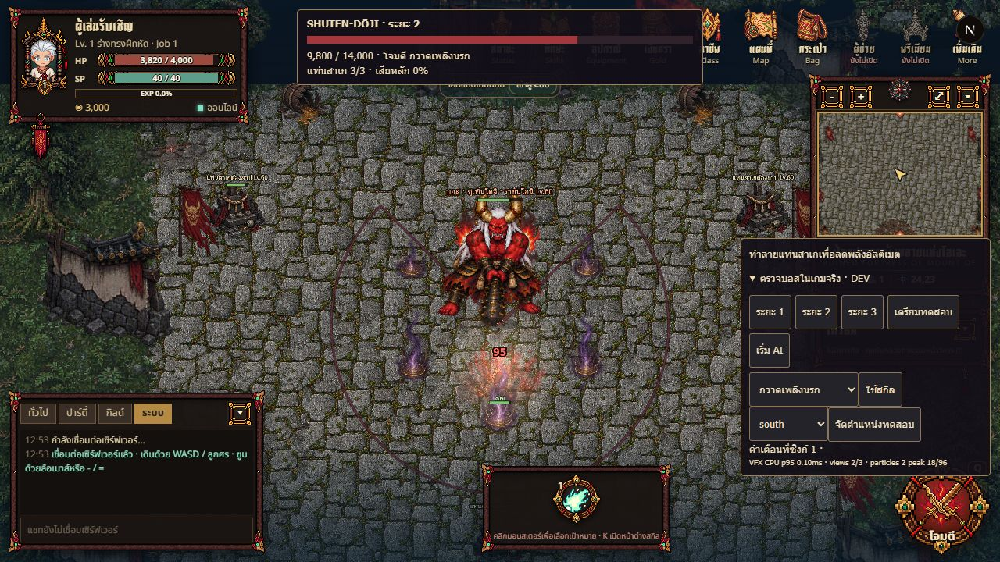
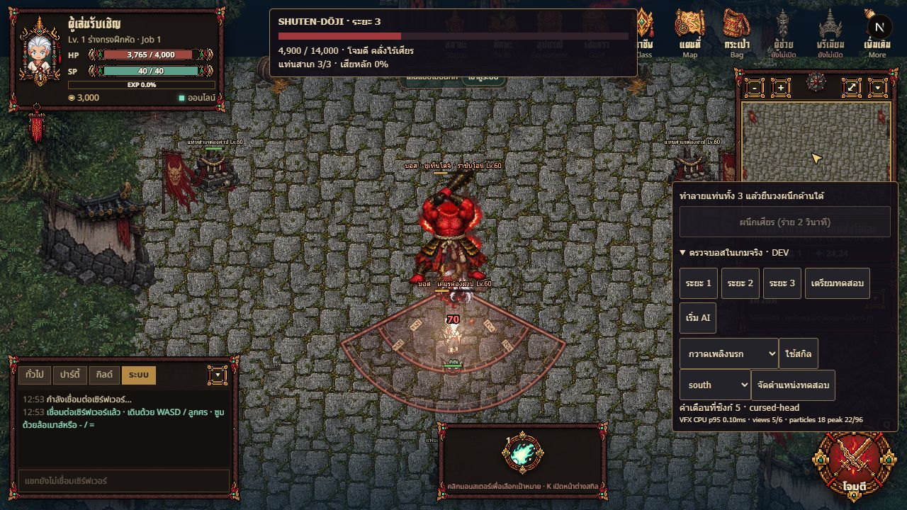
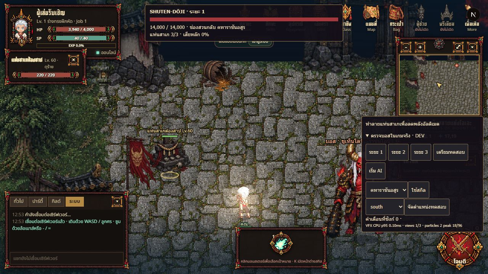
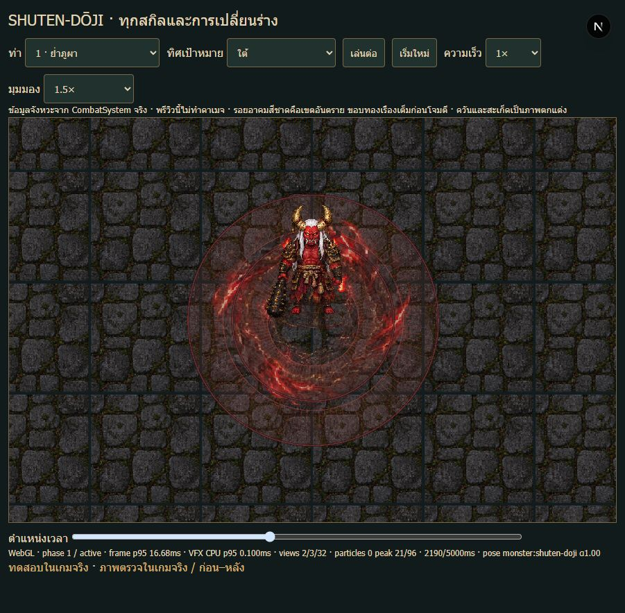
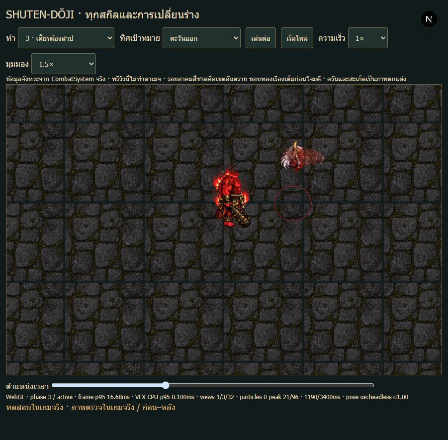
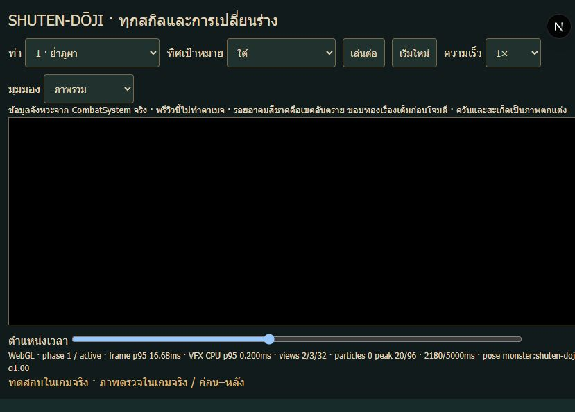
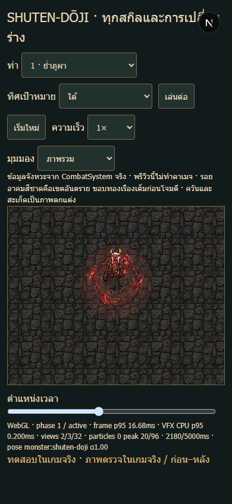

จัดสถานการณ์ด้วย guest ใน GameRoom จริง · ดาเมจและการเดินมาจากเซิร์ฟเวอร์ · ไม่ใช่รายงานชนะต่อเนื่องด้วยตัวละครปกติ
พรีวิวเคลื่อนไหว · ข้อมูลเครือข่าย / เส้นทางเดิน / HP จริง · หลักฐานที่ขอบเส้นเดิม
แก้ขอบเตือนให้รวมขนาดตัวผู้เล่น0.3 หน่วยตาม collision เดิม แสดงวงกระแทกเป็นแถบที่มีช่องว่างด้านใน และให้จุดโจมตีพุ่งกัดตามหัวที่กำลังเคลื่อนที่ ไม่เปลี่ยนดาเมจ ระยะหรือเวลาของเซิร์ฟเวอร์
| สกิล | เฟส | ยืนในเขต: ดาเมจ | เดินหลบ: ดาเมจ |
|---|---|---|---|
| oni-crusher | 1 | 220 | 0 |
| demon-sake | 1 | 210 | 0 |
| mountain-stomp | 1 | 160 | 0 |
| oni-war-cry | 1 | 45 | 0 |
| hellfire-sweep | 2 | 180 | 0 |
| demon-legion | 2 | 0 | 0 |
| blood-moon-leap | 2 | 295 | 0 |
| cursed-head | 3 | 70 | 0 |
| headless-rampage | 3 | 330 | 0 |
| mount-oe-cataclysm | 3 | 120 | 0 |
| wrath-severed-king | 3 | 640 | 0 |
ท่าอัญเชิญไม่มีดาเมจตรง · ท่ากำปั้นใช้การเดินเข้าไปยืนในวงแรกเป็นตัวอย่างรับดาเมจ · ตรวจ29 เหตุการณ์ดาเมจเทียบช่วง hazard โดยเผื่อเวลา snapshot100ms ไม่ใช่การวัด GPU ตรงเฟรม
เฟส1: oni-crusher, demon-sake, mountain-stomp, oni-war-cry · ยังมีชีวิต
เฟส2: armor-break, hellfire-sweep, demon-legion, blood-moon-leap, oni-crusher · guest ที่ยืนรับตายจากการต่อสู้ต่อเนื่อง/ลูกสมุน
เฟส3: severed-king, headless-rampage, cursed-head, mount-oe-cataclysm, wrath-severed-king, ultimate, rejoin, oni-war-cry · ยังมีชีวิต








เส้นเตือนอยู่ใต้ตัวละคร · มีภาพกระแทก/แฟลชรับดาเมจสั้นๆ ตามปกติ · ยังไม่ใช่ผลวัดโทรศัพท์จริงหรือการอนุมัติบาลานซ์สุดท้าย